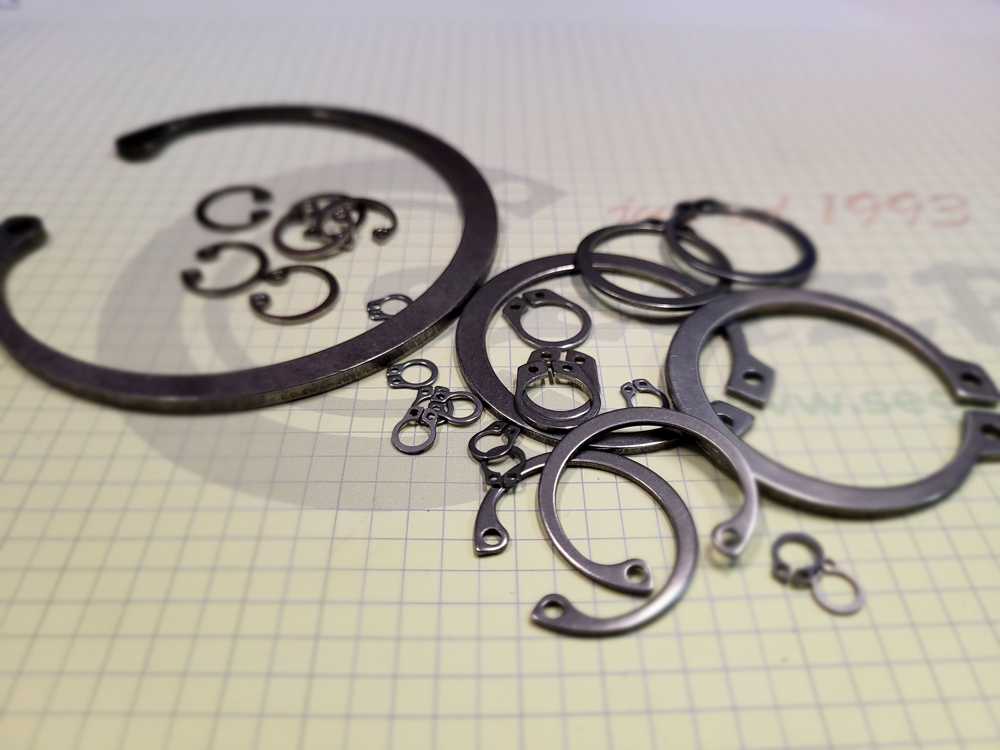
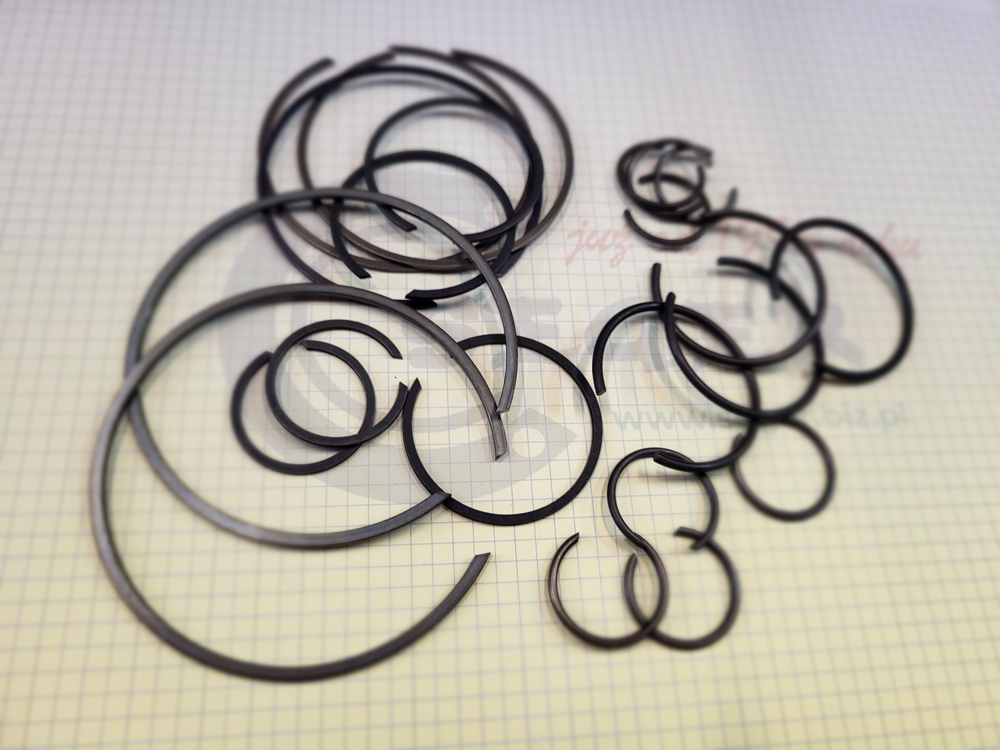
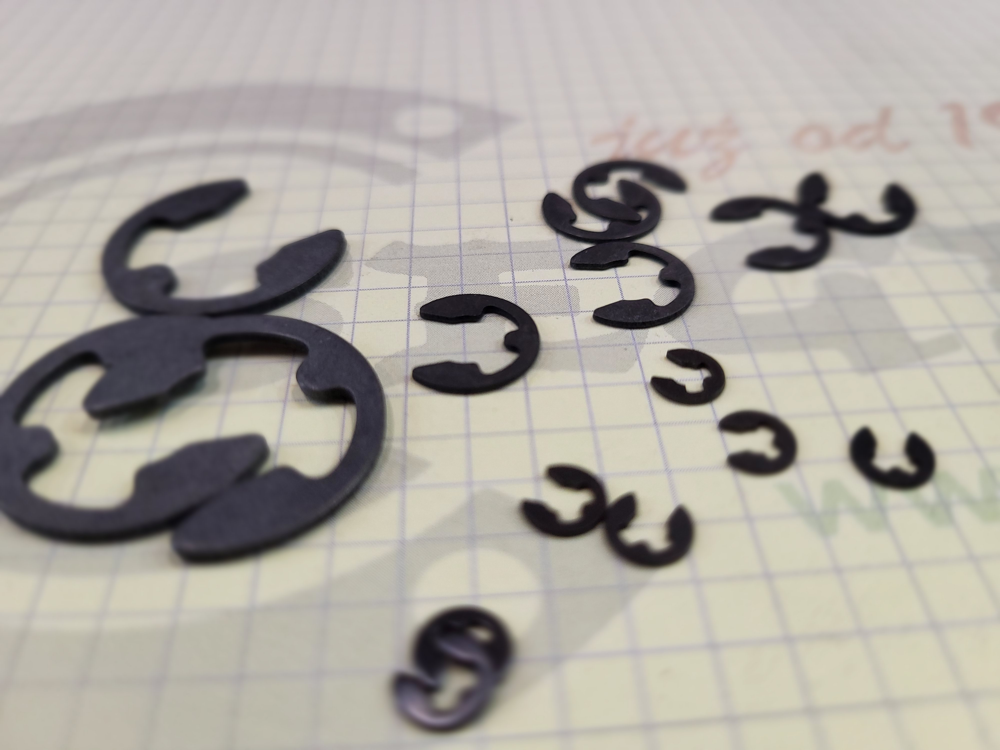

Uszczełki są małymi, ale kluczowymi elementami w różnorodnych urządzeniach i
konstrukcjach, zaprojektowanymi do zabezpieczania przed wyciekami i utratą energii. Te elastyczne,
zwykle gumowe lub silikonowe, pierścienie lub paski, dopasowują się do szczelin i przestrzeni,
zapewniając uszczelnienie i chroniąc przed niepożądanym przepływem płynów, gazów lub pyłów. Ich
różnorodność kształtów i materiałów sprawia, że są niezastąpione w szerokim zakresie zastosowań od
motoryzacji po przemysłowe maszyny.

Uszczełki - te niewielkie, ale niezwykle istotne elementy, stanowią cichych bohaterów w
świecie konstrukcji i techniki. Ich zadanie? Zaprzyjaźnione z szczelinami i przestrzeniami, starannie
chronią przed wyciekami i utratą energii. Wykonane z elastycznych materiałów, takich jak gumy czy
silikony, dopasowują się do każdej niedoskonałości, tworząc nieprzeniknione bariery dla płynów, gazów
czy pyłów. Choć zazwyczaj niewidoczne dla oka, ich rola jest nie do przecenienia - od małych urządzeń
domowych po olbrzymie konstrukcje przemysłowe, uszczełki są stróżami integralności i wydajności.

Uszczełki to te niewielkie, ale wyjątkowo istotne detale, które trzymają świat w
ryzach. Zbudowane z elastycznych materiałów, jak gumy czy silikony, są mistrzami adaptacji, dopasowując
się do wszelkich szczelin i przestrzeni. Ich zadanie? Zapewnić niezawodne uszczelnienie, zabezpieczając
przed niepożądanymi wyciekami płynów, gazów czy pyłów. Choć mogą być niedostrzegalne na pierwszy rzut
oka, ich obecność jest kluczowa dla stabilności i efektywności różnorodnych urządzeń, od najmniejszych
elektronicznych gadżetów po ogromne konstrukcje przemysłowe.